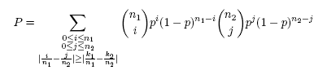

Options
Positive and negative sample
Two Sample Logo calculates statistical significance of the relative position-specific symbol frequencies between two sets of aligned sequences. For example, sequences that are known to share a sequence motif may be locally aligned including positions upstream or downstream from the motif. All aligned sequences in both samples are required to be of the same length, so dash characters ("-") should be used to pad the positions in case some sequences are shorter.
Sequences that contain a motif and at the same time have a certain functional property (say, protein modification sites or transcription factor binding regions) constitute a positive sample. Sequences that contain the motif and at the same time do not have the functional property constitute the negative sample. The distinction between the samples does not necessarily have to be based on the presence and absence of a functional property: as long as there is a clear way of interpreting the data, any pair of sets of aligned sequences can be used as positive and negative.
Sequences can be entered as flat files, or in FASTA or ClustalW formats.
Sequence type
Either amino acid or nucleotide. If amino acid option is selected, all symbols other than the standard 20 amino acid single-letter codes will be replaced with dashes and will not be a part of the statistics. Likewise, if nucleotide option is selected, all symbols other than the A, C, G, T, and U will be replaced with dashes.
Statistical tests
Two Sample Logo supports two types of statistical tests:
- two sample t-test
- binomial test
Frequently used statistical procedure that tests whether two samples were generated by the same Gaussian distribution. The assumptions of the t-test are that all observations are independent and that the standard deviations for both samples are identical, then it checks the equality of means (Hogg and Craig, 1994).
Binomial testConsider two 0-1 samples S1 and S2 of sizes n1 and n2 respectively, in which symbol 1 occurred k1 times in S1 and k2 times in S2. Let us also assume that the test statistic is the absolute difference of symbol’s relative frequencies, i.e. θ = |k1/n1 – k2/n2|. The binomial test calculates the probability that a difference ≥θ for the two samples of sizes n1 and n2 randomly drawn from the underlying null distribution could occur by chance alone. Since, according to the null model, both samples are independent and identically distributed, an unbiased estimate of the probability of success p of the underlying binomial distribution is calculated as the relative frequency of occurrence of a symbol when S1 and S2 are concatenated, i.e. p = (k1 + k2)/(n1 + n2). The achieved significance level P of the null hypothesis is then the probability that the difference ≥θ will be observed between the estimated success probabilities in the two samples of sizes n1 and n2 randomly drawn from the underlying distribution. It is calculated as:
P-value
P-value is defined as the lowest significance level at which the null hypothesis can be rejected. In the case of two sample logos, null hypothesis assumes that each symbol at each position in both samples is generated according to the same probability distribution. Based on the null hypothesis, p-value is calculated as the probability that the test statistic as extreme or more extreme than in the original samples can occur by chance alone. Here, the test statistic is the absolute value of the difference in relative frequencies between positive and negative samples. Since in most cases this probability cannot be calculated exactly, p-value is only approximated.
Show conserved residues
Because conserved motifs will not be enriched nor depleted in the positive sample in comparison to the negative sample (the difference of their relative frequencies will be zero), by default they will not be displayed in the logo. Checking this option forces the software to show conserved residues.
Fixed height symbols
When this option is checked, all enriched and depleted symbols will have the same height. When it is not checked, the height of the symbols will be proportional to the difference of relative frequencies of corresponding residues at a given position in the positive and negative sample.
Bonferroni correction
A correction of the p-value in cases when multiple dependent or independent hypotheses are tested. See (Weisstein) for details.
Advanced options
Title
Sets up the title for the two sequence logo.
Logo range
Limits the analysis to the specified colums in the samples of aligned sequences.
First position index
Index assigned to the first symbol in the logo. For example, if the sample is a 25 residue-long window centered around an active site, first position symbol should be -12: then the active site will have index 0, and the last symbol will be indexed as +12. The default value is 1.
Show X-axis indexes
Show residue indexes on the X-axis.
Show Y-axis labels
Shows labels "enriched" and "depleted" next to the Y-axis.
Output options
Output format
Two Sample Logo supports Encapsulated PostScript (EPS), Portable Document Format (PDF), Graphics Interchange Format (GIF) and Portable Network Graphics (PNG).
Output size
Height and width of the output image, in pixels, centimeters or inches.
Resolution
Sets up the image resolution. Applicable to bitmaps only (GIF and PNG).
Antialiasing
Turns antialiasing on or off.
Boxed image
If this option is checked, letters in the output will be inscribed in bounding boxes.
Outlined symbols
If this option is checked, letters in the output will be only outlined (and not filled).
Color schemes
Black and white
All symbols are written in black type against a white background.
WebLogo default colors
| Amino Acid | Color Name | RGB | Hexadecimal |
| G, S, T, Y, C | green | [0,204,0] | 00CC00 |
| N, Q | purple | [204,0,204] | CC00CC |
| K, R, H | blue | [0,204,0] | 0000CC |
| D, E | red | [204,0,0] | CC0000 |
| P,A,W,F,L,I,M,V | black | [0,0,0] | 000000 |
| Nucleotide | Color Name | RGB | Hexadecimal |
| G | orange | [255,187,0] | FFBB00 |
| T, U | red | [204,0,0] | CC0000 |
| C | blue | [0,0,204] | 0000CC |
| A | green | [0,204,0] | 00CC00 |
Shapley color table for amino acids
| Amino Acids | Color Name | RGB | Hexadecimal |
| D, T | dark red | [160,0,66] | A00042 |
| E | red-brown | [102,0,0] | 660000 |
| C | bright yellow | [255,255,112] | FFFF70 |
| M, Y | dark yellow | [184,160,66] | B8A042 |
| K | blue | [71,71,184] | 4747B8 |
| R | dark blue | [0,0,124] | 00007C |
| S, Q | orange | [255,76,76] | FF4C4C |
| F, P, W | dark grey | [83,76,66] | 534C42 |
| N | flesh | [255,124,112] | FF7C70 |
| G, V | light grey | [235,235,235] | EBEBEB |
| I | dark green | [0,76,0] | 004C00 |
| L | grey-green | [69,94,69] | 455E45 |
| A | light green | [140,255,140] | 8CFF8C |
| H | pale blue | [112,112,255] | 7070FF |
In the original Shapley scheme, G and V were color-coded as white. Since this would render them invisible against a white background, their color has been changed to light grey.
Shapley color table for nucleotides
| Nucleotide | Color Name | RGB | Hexadecimal |
| A | light blue | [160,160,255] | A0A0FF |
| C | orange | [255,140,75] | FF8C4B |
| G | light red | [255,112,112] | FF7070 |
| T | light green | [160,255,160] | A0FFA0 |
| U | dark grey | [184,184,184] | B8B8B8 |
Amino Colors
| Amino Acid | Color Name | RGB | Hexadecimal |
| D, E | bright red | [230,10,10] | E60A0A |
| C, M | yellow | [230,230,0] | E6E600 |
| K, R | blue | [20,90,255] | 145AFF |
| S, T | orange | [250,150,0] | FA9600 |
| F, Y | mid blue | [50,50,170] | 3232AA |
| N, Q | cyan | [0,220,220] | 00DCDC |
| G | light grey | [235,235,235] | EBEBEB |
| L, V, I | green | [15,130,15] | 0F820F |
| A | dark grey | [200,200,200] | C8C8C8 |
| W | pink | [180,90,180] | B45AB4 |
| H | pale blue | [130,130,210] | 8282D2 |
| P | flesh | [220,150,130] | DC9682 |
Charge
Positively charged residues (K, R, H) are colored blue, and negatively charged residues (D, E) are colored red; all neutral residues are colored black.
Hydrophobicity
Hydrophobic residues (A, F, G, I, L, P, V, W, Y) are cyan colored, while the remaining hydrophilic residues are colored black. This classification was based on (Eisenberg, 1984).
Surface exposure
Surface exposed residues (D, E, H, K, N, P, Q, R, S, T, Y) are colored orange, and burried residues (A, C, F, G, I, L, M, V, W) are colored black. This classification was based on (Janin, 1979).
Flexibility
High flexibility residues (D, E, K, N, P, Q, R, S) are colored red, whereas low flexibility residues (A, C, F, G, H, I, L, M, T, V, W, Y) are colored green. This classification was based on (Vihinen et al., 1994).
Disorder
Disorder-promoting residues (A, R, S, Q, E, G, K, P) are colored red, order-promoting residues (N, C, I, L, F, W, Y, V) are colored blue, and disorder-order neutral residues (D, H, M, T) are colored black. This classification was based on (Dunker et al., 2001).
User defined color scheme
This option allows you to specify a new color mapping using the set of standard predefined colors listed in the following table:
| Color | RGB | Hexadecimal |
| blue | [0,0,255] | 0000FF |
| black | [0,0,0] | 000000 |
| cyan | [0,255,255] | 00FFFF |
| green | [0,255,0] | 00FF00 |
| greenblue | [46,139,87] | 2E8B57 |
| magenta | [0,255,0] | FF00FF |
| orange | [255,165,0] | FFA500 |
| purple | [160,32,240] | A020F0 |
| red | [255,0,0] | FF0000 |
| redorange | [255,69,0] | FF4500 |
| violet | [238,130,238] | EE82EE |
| white | [255,255,255] | FFFFFF |
| yellow | [255,255,0] | FFFF00 |
Any symbol not explicitly assigned to a color will default to black.
References
- Dunker, A.K., Lawson, J.D., Brown, C.J., Williams, R.M., Romero, P., Oh, J.S., Oldfield, C.J., Campen, A.M., Ratliff, C.M., Hipps, K.W. et al. (2001) "Intrinsically disordered protein." J. Mol. Graph. Model., 19, 26-59.

- Eisenberg, D. (1984) "Three-dimensional structure of membrane and surface proteins." Annu. Rev. Biochem., 53, 595-623.
- Hogg, R. V. and Craig A. (1994) Introduction to Mathematical Statistics, 5th edition, Prentice Hall.
- Janin, J. (1979) "Surface and inside volumes in globular proteins." Nature, 277, 491-492.
- Vihinen, M., Torkkila, E. and Riikonen, P. (1994) "Accuracy of protein flexibility predictions." Proteins, 19, 141-149.
- Weisstein, E. W. "Bonferroni Correction." From MathWorld - A Wolfram Web Resource. http://mathworld.wolfram.com/BonferroniCorrection.html